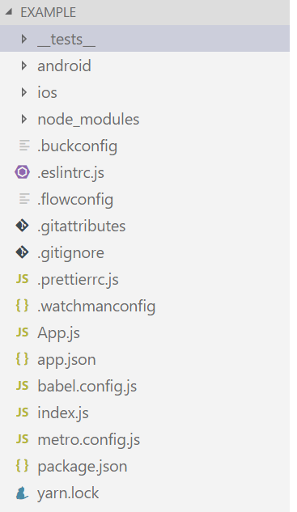

react-native初识:目录结构与HelloWorld¶
React-native的目录结构¶
经过init后的react-native目录
- _tests_
单元测试所用文件
- android
存放android有关目录，其中的目录结构与原生android一致。
- ios
同上，ios原生结构文件夹
- node_modules
项目中所有的模组，引入的依赖、库都将被安装在其中
- index.js
项目默认的入口文件
- App.js
项目默认创建的第一个组件（Component）
- package.json
管理项目所有依赖包的json文件
HelloWorld¶
观察index.js的内容¶
import {AppRegistry} from 'react-native';
import App from './App';
import {name as appName} from './app.json';
AppRegistry.registerComponent(appName, () => App);
可以发现，通过import和registerComponent，项目的入口被转到了App.js
更改App.js的内容¶
import React, { Component } from 'react';
import { Text } from 'react-native';
export default class HelloWorldApp extends Component{
render(){
return(
<Text>Hello World</Text>
);
}
}
接下来只需要 react-native run-android 便可以查看到Hello world的结果了
- Tips
在一个js文件中我们可以创建多个 class （Component），添加export default即将其作为该文件的默认入口